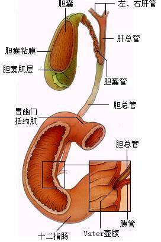

肝胆外科
胆管结石是指肝内外胆管内有结石形成，是最常见的胆道系统疾病。 结石阻塞胆管引起胆汁淤滞，继发细菌感染而导致急性胆管炎发生。胆管反复炎症可造成局部管壁增厚或疤痕性狭窄，而胆管炎症和狭窄又可以促进结石形成。胆管狭窄近端被动扩张，内压增高。 胆管结石分为原发性胆管结石和继发性胆管结石，原发性胆管结石系指在胆管内形成的结石，主要为胆色素结石或混合性结石。 继发性胆管结石为胆囊结石排至胆总管者，主要门诊为胆固醇结石。根据结石所在部位分为肝外胆管结石和肝内胆管结石。 肝外胆管结石多位于胆总管下端；肝内胆管结石可广泛分布于两叶肝内胆管，或局限于某叶胆管，其中以左外叶和右后叶多见。
临床多见于中年女性，主要表现有发生于右上腹的胆绞痛，是由于胆石在服道内的移动使胆囊或胆总管平滑肌扩张及痉挛而产生胆绞痛。胆绞痛往往有一定的诱因如饱餐后或腹部受到震动。胆绞痛一般在中上腹或右上腹呈持续性逐渐加重的疼痛，常放射至右肩胛处或肩部，时合并有呕吐。胆绞痛可以呈间歇发作。感染严重可出现休克和精神异常，症状反复久之出现胆汁性肝硬化，继而出现门静脉高压症。
胆道结石通常分肝内胆道结石和肝外胆道结石，肝外胆道有胆囊和胆总管，胆囊象一个“小库房”，是胆总管附属的一个囊性的器官，它的主要功能是储存肝脏分泌多余的胆汁，因为它口小肚大，同时胆汁在其内存储时间长而不流动，所以容易产生结石，但是更重要的因素可能是胆汁成分的变化和胆囊的感染因素。
溶石疗法
治疗原理:分解吸收胆固醇，液化胆汁中的胆固醇，防止并化解胆结石
治疗优势:不开刀，无痛苦
治疗劣势:服用周期长,副作用明显,有腹泻、肝功能受损等不良反应,临床治疗有效率仅20%左右
传统手术
治疗原理:开刀行胆囊切除及胆管切开取石
治疗优势:术中尽可能取尽结石；
解除胆道狭窄和梗阻，去除感染病灶；
术后保持胆汁引流通畅，预防胆石再发。
治疗劣势:损伤大，痛苦重，住院时间长，并发症多。
微创手术
治疗原理:腹腔镜手术只要在腹壁上打3-4个5-10mm小孔。切除胆囊后，打开胆总管，通过取石钳、取石网篮或冲洗等方法将结石取尽。腹腔镜常与胆道镜联合应用，若胆道无明显炎症，胆总管下端无狭窄，可以行胆总管一期缝合，不放置T管引流，从而减少病人的痛苦，缩短住院时间，节约医疗费用；若胆管炎症较重，或合并肝内胆管结石，则行腹腔镜胆总管切开取石、T管引流术。胆总管残余结石可留待术后经T管窦道胆道镜取石。
治疗优势:可取得传统手术相同的疗效。腹部损伤小，病人痛苦轻，住院时间短。
治疗劣势:手术费用高，对医生的专业技术及手术经验要求高。
胆管结石现仍以手术治疗为主，可取得显著疗效。
手术治疗原则是：
1、术中尽可能取尽结石；
2、解除胆道狭窄和梗阻，去除感染病灶；
3、术后保持胆汁引流通畅，预防胆石再发。
传统手术方式治疗胆管结石为病人造成极大的痛苦
通常的手术方法是将胆囊切除同时将胆总管切开将胆道内的结石取出，再在胆总管内放一根“T”型管，2周后造影证实没有残余结石后方可拔除管子。病人痛苦大，住院时间长，费用高。这种情况如果发生在老年患者，情况就更加严重，所以胆道结石应当早期检查和治疗，尤其是老年人
胆管结石需及时进行手术治疗，不要因惧怕手术而耽误治疗，使得病情加重。
过去作胆囊结石的手术被认为是大手术,病人常因害怕手术所以选择一些排石或碎石的方法，有些病人因为排石造成结石的嵌顿反而需要急诊手术,风险和痛苦均增加。胆管结石需尽快进行手术治疗，取出结石，如不及时治疗或缺乏有效治疗则易引起胆汁淤积、肝硬化甚至肝肿瘤。
微创技术治疗胆管结石，病人痛苦小，效果显著。
近几年来随着微创外科的发展，只需要通过痛苦小，恢复快的微创方法轻易的解除胆道结石。医生利用腹腔镜和胆道镜，只在腹壁上打几个小孔就可彻底治疗大部分胆道结石病，借助力先进的腔镜设备可以清楚的看见结石和胆道的病变，直截了当的将胆囊结石和胆道的结石完全彻底的清除干净，大大的减轻病人的痛苦，同时节约了费用和时间。病人术后没有过去手术那种大的刀口，没有疼痛，术后第一天可以起床活动，4-5天即可出院。
胆囊是否有切除的必要？
胆道出现胆结石就说明你的胆道有病变，如果经常出现上腹不适或疼痛，说明胆囊就可能是个病理胆囊，而不再是个正常的器官了，应该早期治疗。如果不能早期将胆囊内的结石祛除，其内的结石就会随着我们每天饮食时胆囊的一次次的收缩，一次次地“冲击”着胆囊管，那些“不大不小”的结石就会从胆囊掉入到胆管内，最糟糕的是它会将胆道最下端胆汁进入肠道的入口堵死，病人就会出现黄疸和发热，这时小病就变成了重病了。
胆管结石微创手术适用人群及适用病症
胆结石数量达到（），大小达到（）应进行手术治疗
老年患者
对切口要求美观的患者、
术后急于康复的患者
